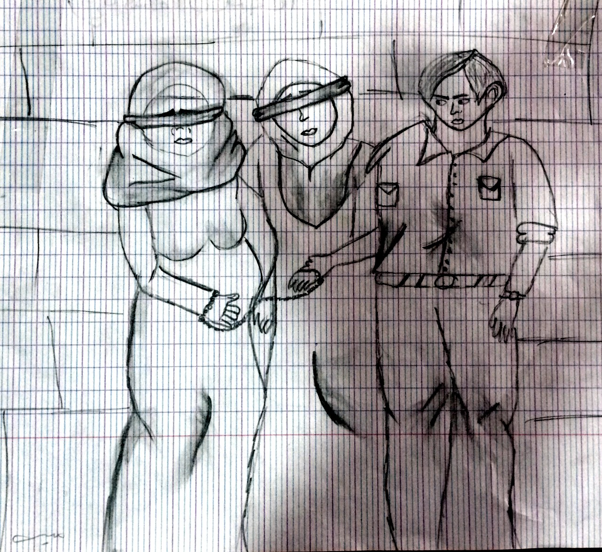

Mara R. Revkin & Elisabeth Jean Wood
6 Journal of Global Security Studies 1–20 (2021)
Abstract
The Islamic State (IS), which controlled significant territory in Iraq and Syria between 2014 and 2017, engaged in a wide repertoire of violence against civilians living in these areas. Despite extensive media coverage and scholarly attention, the determinants of this pattern of violence remain poorly understood. We argue that, contrary to a widespread assumption that the IS wielded violence indiscriminately, it systematically targeted different social groups with distinct forms of violence, including sexual violence. Our theory focuses on ideology, suggesting it is a necessary element of explanations of patterns of violence on the part of many armed actors. Ideologies, to varying extent, prescribe organizational policies that order or authorize particular forms of violence against specific social groups and institutions that regulate the conditions under which they occur. We find support for our theory in the case of sexual violence by IS by triangulating between several types of qualitative data: official documents; social media data generated by individuals in or near IS-controlled areas; interviews with Syrians and Iraqis who have knowledge of the organization's policies including victims of violence and former IS combatants; and secondary sources including local Arabic-language newspapers. Consistent with our theory, we find that the organization adopted ideologically motivated policies that authorized certain forms of sexual violence, including sexual slavery and child marriage. Forms of violence that violated organizational policies but were nonetheless tolerated by many commanders also occurred and we find evidence of two such practices: gang rape of Yazidi women and forced marriage of Sunni Muslim women.
Download the PDF from the Duke Law Scholarship Repository →
Repository record →
Photographs from this research
A drawing collected during field research in Iraq.

A drawing of two blindfolded and bound women led by a man in uniform, collected during field research in Iraq (Revkin 2017)
Back to Research Areas. All photographs by Mara Revkin.